Caso 018 · Lacol · 2018 · vivienda colectiva (cooperativa)
Una plaza común elevada sobre un zócalo de hormigón de lo compartido, con un ojo de vidrio en su suelo que deja caer el sol del mediodía sobre la sala de asamblea; al NO, siete plantas de vivienda ligera de madera; al SE, un pabellón bajo que deja pasar el sol.
Sintetiza lugar (parcela estrecha de 13,8 x 45,5 m entre medianeras, calle al NO, parque al SE, sol del mediodía que llega del SO por encima de la medianera), programa (una comunidad de unas 50 personas que comparte lo cotidiano), composición (dos cuerpos desiguales y un vacío entre ambos) y construcción (lo que se comparte pesa y se ancla; lo que se habita se levanta ligero).
Altura solar de mediodía: 72,1° (21 de junio), 48,6° (equinoccio) y 25,2° (21 de diciembre). El sol de mediodía viene del SO, a 45° del eje largo; en el plano de la sección NO-SE su ángulo aparente es 77,1° / 58,1° / 33,6°, y así se dibuja en S01.
Hormigón visto en el zócalo, el núcleo y las medianeras (masa térmica para el verano mediterráneo, y menos carbono que un edificio de hormigón entero); madera de alerce y panel contralaminado en el cuerpo alto y el pabellón (renovable, ligera, montaje en seco). Vidrio solo donde baja el sol (ojo) y en las ventanas de las fachadas.
| Exigido | Propuesto | Cumple / desviación |
|---|---|---|
| Situación, plantas, secciones, alzados, detalle, exteriores, memoria | U01, P01-P09, S01-S02, S03-S04, D01, U02, V01-V02, memoria | Cumple |
| Viviendas, a definir | 21 viviendas, 89 módulos, ≈ 47 personas + 2 plazas de invitadas | Cumple |
| Cocina-comedor común | 72,4 m² | Cumple |
| Lavandería | 24,2 m² | Cumple |
| Sala polivalente | 144,9 m², aforo 120 | Cumple |
| Vivienda de invitadas | 3,45 x 10,5 m, 2 plazas (P1) | Cumple |
| Salud y cuidados | 36,2 m² (P1) | Cumple |
| Almacenes, bicicletas, objetos, herramientas | almacén 48 m², taller 24 m², bicicletas 48 m² (≈ 30 bicis) | Cumple |
| Coworking (opcional) | 36,2 m² (P1) | Cumple |
| Azoteas, patios, exteriores comunes | plaza 241 m², huerto 48 m², patio 36 m² | Cumple |
| Superficie construida 2.250-3.750 m² | ≈ 2.003 m² (útil 1.861 m²) | Desviación del 11 % por debajo: para 50 personas son 40 m² por persona incluido lo común, sin más viviendas que el programa |
| Presupuesto 2,6-2,7 M€ | estructura repetida y pocas piezas | No evaluable sin precios |
| Parámetros urbanísticos | altura 25,2 m, ocupación del 100 % en PB y P1 | No constan en el encargo; hipótesis de proyecto |
| Habitabilidad (Decret 141/2012), altura libre ≈ 2,50 m | 2,70 m en viviendas; 2,35 m en el recorrido (pasillo) | Cumple |
| Incendio: recorrido ≤ 25 m con salida única (< 28 m, ≤ 50 pers.) | recorrido máximo ≈ 10 m a la escalera; suelo de la última planta a +22,20 m; escalera protegida con puerta EI 60 | Cumple. Con 47 personas, una escalera |
| Incendio: sala con más de 100 personas, dos salidas | dos salidas independientes (calle y patio-huerto) | Cumple |
| Accesibilidad: itinerario y ascensor | calle → PB → ascensor → plaza y viviendas | Cumple; el huerto y la escalera 2 no son accesibles (se llega por el patio sin desnivel salvable): desviación declarada |
| Barandilla 0,90 m (1,10 m si > 6 m) | 1,10 m en escaleras, huecos, patio y cubierta | Cumple |
| DB-HE, zona C2 | envolvente de 25 cm con 12 cm de aislante de fibra de madera; cubierta con 16 cm | Sin cálculo (anteproyecto) |
Pilares de madera laminada de 30 x 30 cm en los ejes 2-4; carga de unos 85 kN por planta y pilar (12 m² x 7 kN/m²), 600 kN en la base del cuerpo alto: cabe en un pilar de hormigón de 40 x 40 cm bajo la plaza. Forjado de madera contralaminada de 30 cm (luz 3,45-3,5 m, L/12). Plaza de hormigón armado de 35 cm. Cimentación: zapatas aisladas bajo los pilares de hormigón y los muros, ligadas por la solera de 25 cm; terreno de arcillas y gravas de Barcelona, a comprobar con estudio geotécnico. Juntas: la madera apoya en el hormigón sobre un durmiente de acero con fieltro. No se proyecta junta de dilatación en el zócalo: la planta mide 45 m y se resuelve con juntas de retracción de hormigonado en el proyecto de ejecución (declarado como pendiente, no dibujado).
| Elemento | Material | Acabado |
|---|---|---|
| Zócalo, núcleo, medianeras, plaza | hormigón | visto |
| Fachadas del cuerpo alto y del pabellón | madera | lamas de alerce |
| Pilares y forjados de las viviendas | madera | vista |
| Tabiques de vivienda | yeso | pintura |
| Caja de la escalera (tabique EI 60) | ladrillo | enlucido |
| Ojo | vidrio | pisable, antideslizante |
| Cubiertas | madera, con grava y lámina | grava |
| Conductos, captadores, equipo de aerotermia | metal | galvanizado |
Cuarto de instalaciones en PB (contadores, bombas, acumulador). Aerotermia en la cubierta, con los captadores solares para el agua caliente. Los baños sin ventana se ventilan por conducto de ventilación de 20 x 20 cm (uno por baño, con remate de 90 cm sobre la cubierta). Los pluviales de la cubierta se recogen con pendiente del 1 % hacia el perímetro y van a la red de saneamiento de la calle; su trazado se define en el proyecto de ejecución y no se dibuja. Basuras: cuarto con salida directa a la calle y franja de carga y mudanza de 1,5 m.
Fachada de cuerpo alto, de fuera a dentro: lamas de alerce (3 cm) · lámina impermeable y transpirable (1 cm) · aislamiento de fibra de madera (12 cm) · panel contralaminado (7 cm) · placa de yeso (2 cm). Cubierta: grava (5 cm) · lámina impermeabilizante (1 cm) · aislamiento (16 cm) · contralaminado (13 cm). Solera de PB: pavimento continuo (2 cm) · hormigón armado (18 cm) · lámina (1 cm) · grava drenante (4 cm). La fachada se retranquea 30 cm respecto al forjado para ventilar la lama.
Verano: ventilación cruzada NO-SE aprovechando la brisa del SE, masa térmica del zócalo, sombra de las medianeras y de los árboles de la plaza (3 en alcorque), ojo con vidrio de control solar. Invierno: sol bajo del SE de mañana, compacidad (cuerpo alto único), envolvente aislada. La plaza queda abierta al cielo; el pabellón de 3 m no sombrea la plaza al mediodía de invierno.
Itinerario accesible desde la calle (acera y franja de carga a nivel) a la sala y, por el ascensor, a la plaza, el pabellón y cada vivienda. Evacuación del cuerpo alto por una escalera protegida de 1,00 m (puerta EI 60 en cada planta) hasta PB; desde allí, por el pasillo de 3,45 m a la calle (21 m). La sala tiene dos salidas: al pasillo y al patio-huerto. La plaza sale por la escalera 2 al huerto.
El soleamiento calculado sustituye a la maqueta al sol. Dependen de datos que el encargo no da: la altura de la medianera SO (el ojo recibe sol en invierno solo con 9 m) y los parámetros urbanísticos. Los alzados salen rotulados por la biblioteca como «Alzado norte» (S03, la cara noroeste, a la calle) y «Alzado sur» (S04, la cara sureste, al parque), porque solo admite orientaciones cardinales y el edificio mira a 45° de ellas. Las láminas de planta y de urbanización quedan por debajo del 60 % de ocupación porque la parcela es larga y estrecha (13,8 x 45,5 m).
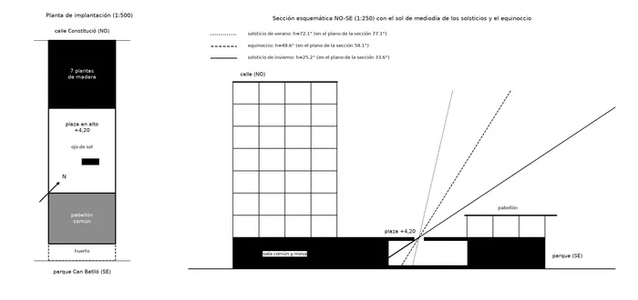
C1 · Croquis 1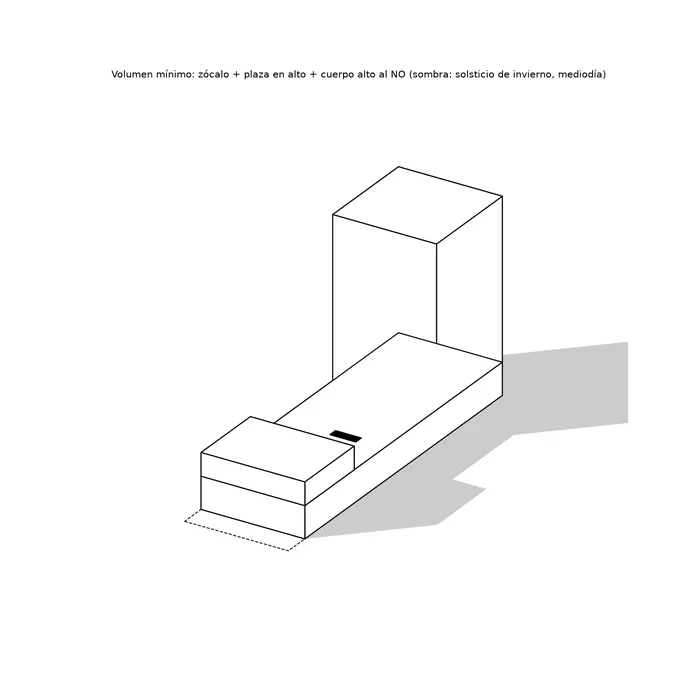
C2 · Croquis 2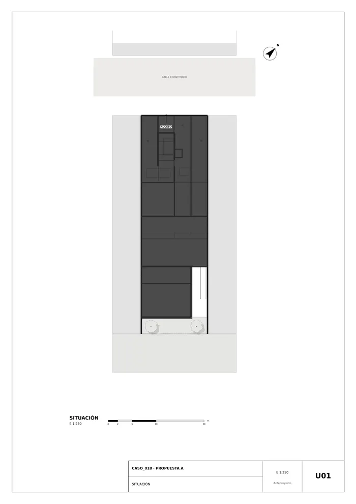
U01 · Situación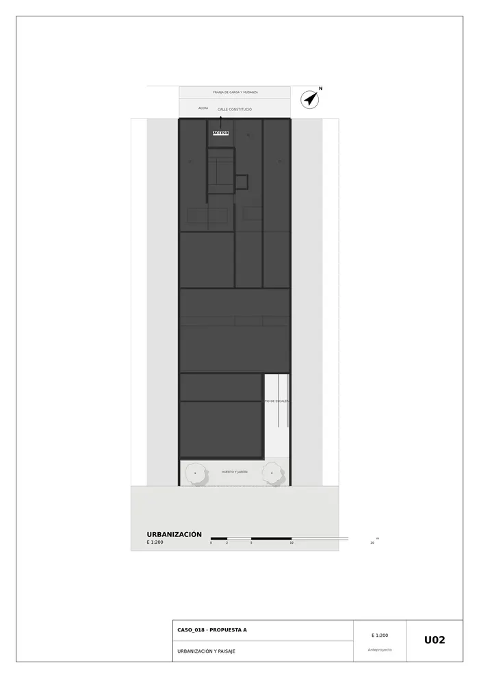
U02 · Urbanización y paisaje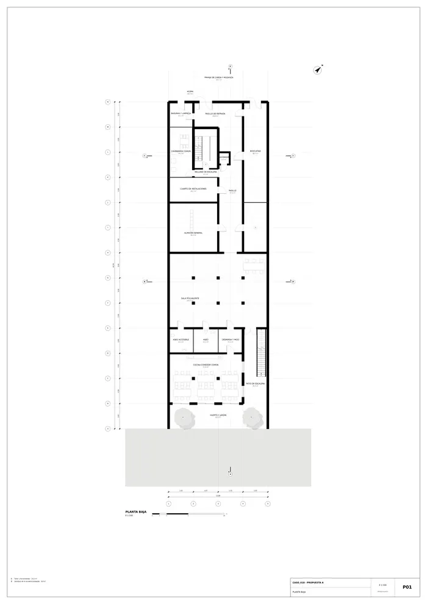
P01 · Planta baja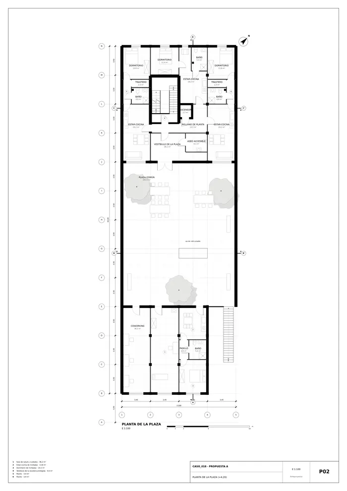
P02 · Planta de la plaza (+4,20)P03 · Planta +7,20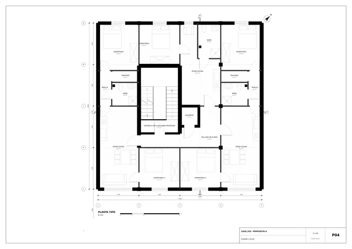
P04 · Planta +10,20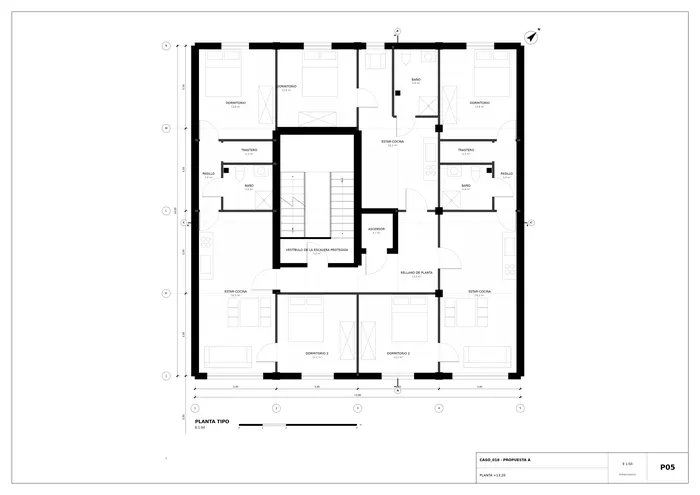
P05 · Planta +13,20P06 · Planta +16,20P07 · Planta +19,20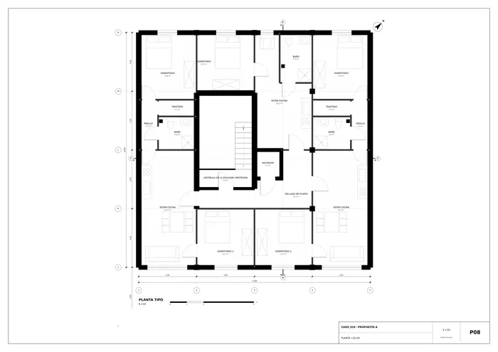
P08 · Planta +22,20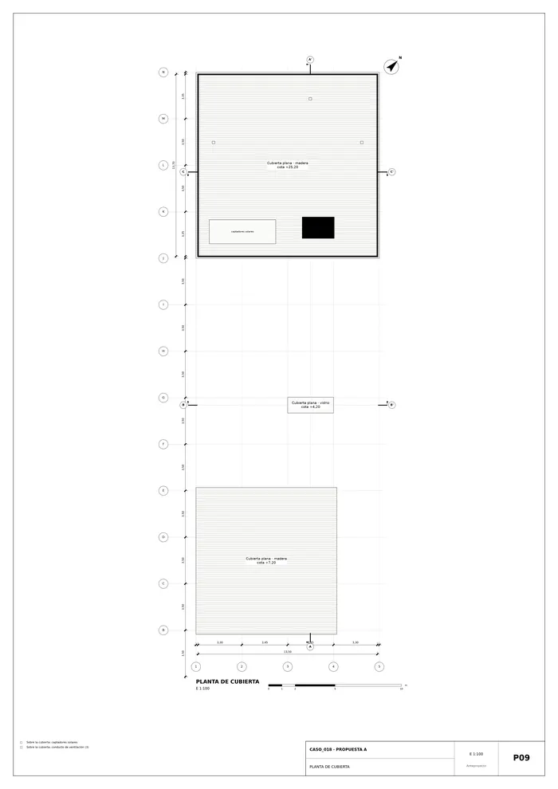
P09 · Planta de cubierta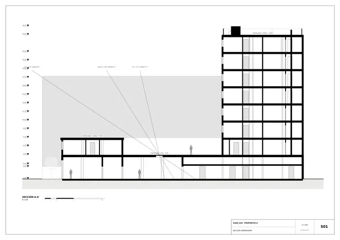
S01 · Sección generadora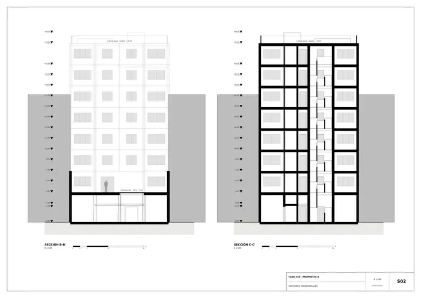
S02 · Secciones transversales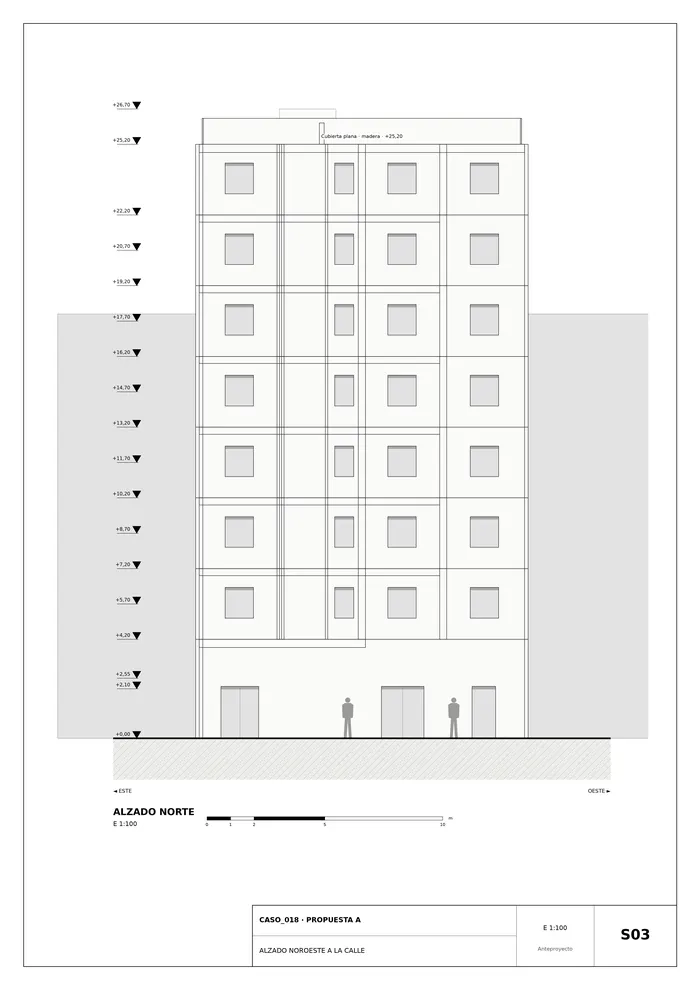
S03 · Alzado noroeste a la calle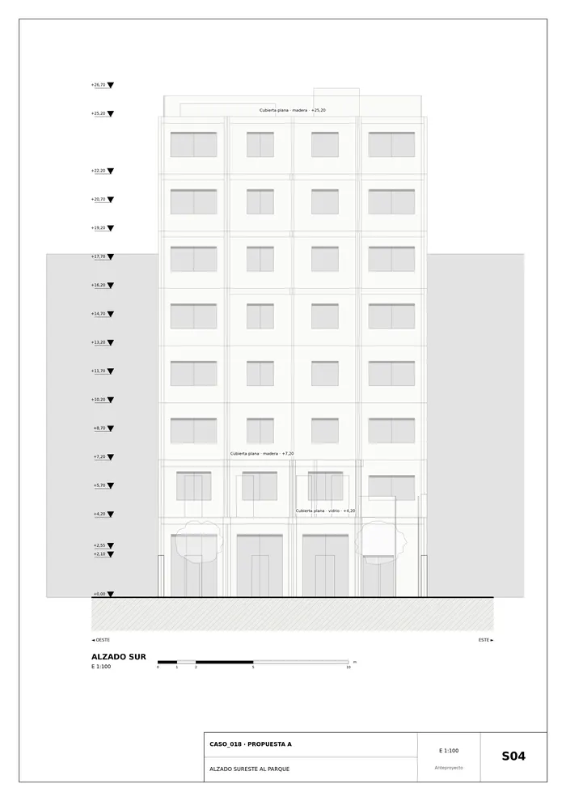
S04 · Alzado sureste al parque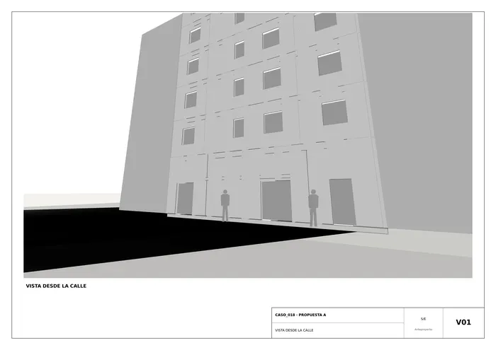
V01 · Vista desde la calle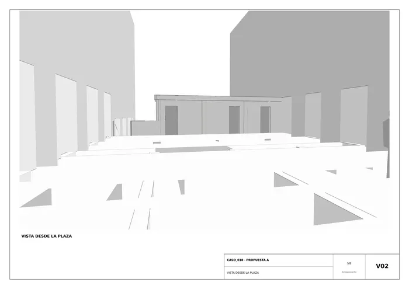
V02 · Vista desde la plaza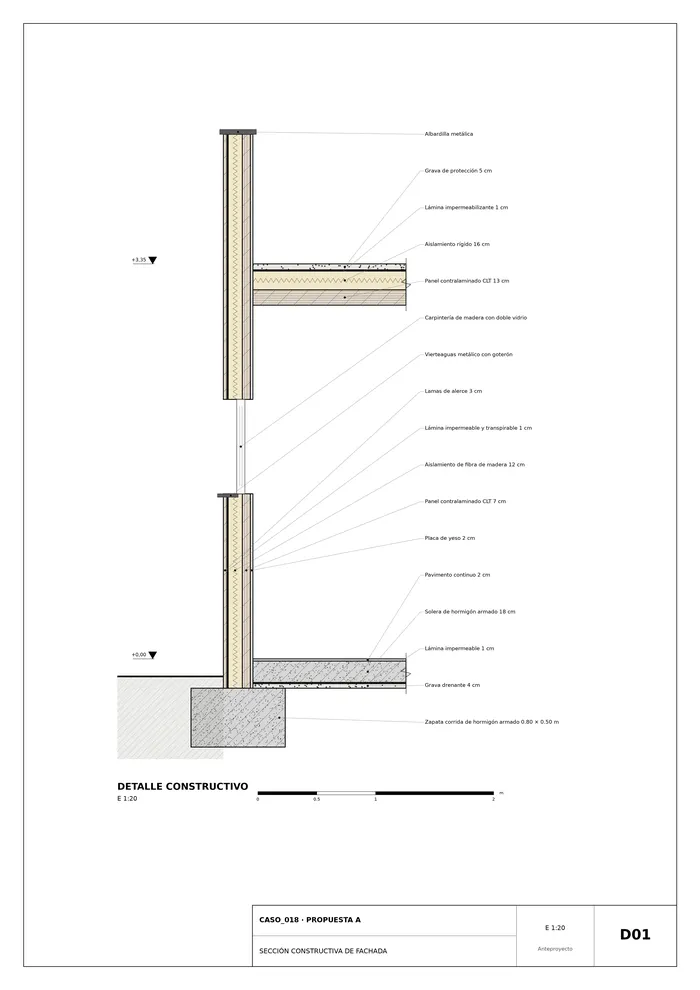
D01 · Sección constructiva de fachadaMemoria de la propuesta tal como la entregó el sistema. Se han omitido las notas internas del proceso (revisiones, control de reconocimiento y referencias a archivos de trabajo).